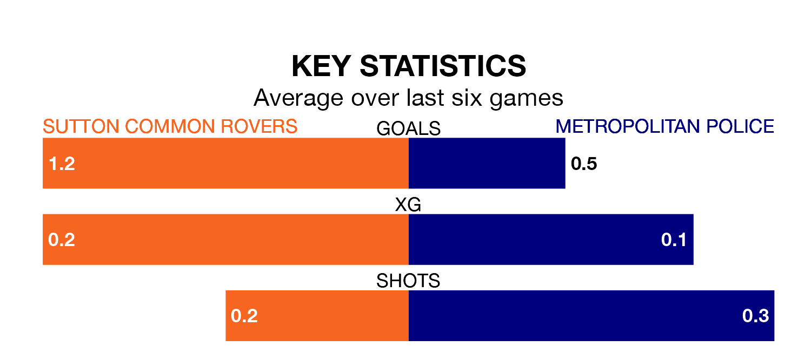

Sutton Common Rovers and Metropolitan Police both come into Saturday's kick-off in poor form, having picked up four and two points respectively in their last six games.
Rovers have won one and drawn one of the last six, while Metropolitan Police have taken two draws and four losses.
In the last 10 years, Sutton Common and Metropolitan Police have played each other on eight occasions. Sutton Common won six of them, Metropolitan Police one, and they drew once.
On average, Rovers scored 2.2 goals and Metropolitan Police 1.1 in those matches.
Their last meeting was on August 12, when Sutton Common won 4-0 away.
Metropolitan Police are 17th in the table after 34 games, of which they have won eight and drawn eight, earning 32 points.
Sutton Common are two places ahead of the away team in 15th, with nine wins and seven draws putting them on 34 points.
With 35 goals in 34 games so far this season, Metropolitan Police are the league's second-lowest scorers with 1.0 goals per game. And they are conceding more than average, letting in 58 goals at a rate of 1.7 per game.
Rovers are also below average scorers, with 1.3 goals per game, compared to a league average of 1.6. They have conceded 1.8 goals per game.
Sutton Common's last match was on Monday, a 2-1 loss against Raynes Park Vale.
Metropolitan Police lost 2-0 against Westfield Surrey last time out, also on Monday.
Updated: 16:41 (UTC), 04/04/24